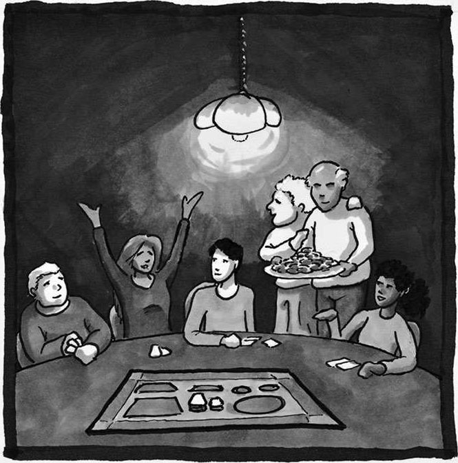

12 集体
数学中真正能给人带来满足感的只有两件事，一是向他人学习，二是与他人分享。每个人能够完全理解的东西其实极其有限，大多数事物我们只是知其皮毛，未曾深究。
——威廉·瑟斯顿
（William Thurston）1
什么是归属感？所谓归属感，指的就是一个人被集体接纳、被团队重视、被身边之人公平对待的程度。程度越高，我们就越有归属感。
——迪安娜·汉斯佩格
（Deanna Haunsperger）2
里卡多·古铁雷斯（Ricardo Gutierrez）是一位出生于工人阶级社区的纽约人，父母都是移民。他的父亲没能读完高中，母亲也在八年级的时候辍学了。2017 年，他在某篇报道中读到了我那场以“如何在数学之路上蓬勃发展”为主题的演讲的文字记录，随后给我写了一封信。信中提到，他在很小的时候就表现出了数学方面的天赋，可是一直没有人能给予他正确的指引。于是他在大学期间转变了兴趣，并在过去的 19 年当中把时间和精力全部奉献在了音频工程上，成了一位相当成功的音频工程师——虽然算不上一份真正的技术性工作，不过正如他所说的那样：“音乐就是我工作中的一切，我会想方设法让它们变得更加动听，更加悦耳。”他深爱自己的事业——事实上，他参与的某个项目曾经获得过格莱美奖的提名——可他还是觉得生活中少了点什么。

我就是感觉自己还渴望着某些别的东西，没有这些东西，我的人生就算不上圆满。我想要学习更多知识，想要体验一下数学、计算机这类学科的思维逻辑。或许是因为逻辑思考那种层层深入的感觉在吸引着我，让我感受到了思考的乐趣；或许是因为我的本职工作再也无法满足我的求知欲，而数学和编程刚好可以填补我的胃口……或许，更准确地说，我对目前的工作已经过于熟练，熟练到我感觉每天都像是在“日常打卡”，毫无新意。
之后他迈出了勇敢的一步，以 40 岁的年龄重返校园，参加了一项针对“非传统学生”开设的教学项目。他说：
这种严苛的学术环境给我带来了难以想象的压力和艰辛，甚至让我觉得有些难以接受——尤其是对一个已经很久没有接触过高强度学习生活的人来说——可有时候，我觉得让我悲痛欲绝的并不是这些压力，而是在数学课与计算机课上，我从小就有的那种“我根本不属于这里”的感觉。我之所以会有这种感觉，可能和我童年时期的糟糕经历有很大的关系。当时的邻里环境和生活条件是如此严酷，以至我每冒出一个梦想，都会立刻被无情的现实碾碎。没有任何一个人站出来指引我，帮我纠正那些已经根深蒂固的错误观念。“我根本不属于这里”这句话在我脑海中不断地回响，逐渐扭曲了我的人生方向，成为我生命中挥之不去的阴影。
“我不属于这里”这种感觉可能会给人们带来极大的伤害，所以集体对个人来说相当重要，因为它能让我们产生归属感。帕克·帕尔默说过：“所谓教学，指的就是为大家创造一个集体学习的环境，让大家在实践中感受集体的力量。”果真如此的话，当别人因自身所限而无法看清真相时，我们就有义务主动站出来为他们戳破谎言。1我们可以帮助他们找回归属感。
任何一个人都不可能在脱离集体的情况下健康发展（集体指的就是那些可以体会到我们的痛苦、感受到我们的喜悦、看到我们心中的希望、理解我们内心恐惧的人）。集体可以让我们明白，奋斗是一种正常现象，并意识到“我不是一个人在奋斗”。
集体是每个人内心深处都存在的一种渴求。无论是在休闲娱乐、教育学习方面，还是在职业生涯、家庭生活当中，集体都扮演着“引路人”的角色，可以帮助我们迈入数学的大门，引导我们在数学之路上不断前进。本书中曾多次提到“数学团体”这一概念，现在大家应该明白，只要是因共同的数学经历、数学知识而聚集起来的一群人，都可以算作数学团体。当你和家人分享数学段子、向家人展现自己对数学的热爱、陪家人制作一些几何小物件、与家人一起阅读和数学相关的文章，甚至是同家人一起下厨做饭（依照食谱上给出的说明添加食材，和家人探讨调料的用量）时，你实际上就已经在家里建立起了一个数学团体。当你走进数学教室，或是参加一场策略博弈游戏时，你实际上就已经进入了一个数学团体。
对大多数人来说，“集体”这个词和数学没什么关联。恰恰相反，大家都觉得数学家的典型形象，就应该是“一个人为了某个问题独自潜心研究几十年”。没错，近些年有几个相当著名的数学难题得到了解决，这些事例的确符合大家的这种观念。例如 1993 年，安德鲁·怀尔斯（Andrew Wiles）给出了费马大定理的相关证明（当时的证明存有一些缺陷），终结了这个 350 多年里一直悬而未决的难题。其实该定理描述起来非常简单： n > 2 时，方程 xn + yn = zn不存在整数解。可就是这么简单的一句话，安德鲁·怀尔斯独自一人花了 7 年的时间，费了好大一番心血才找到证明方法。2又例如 2003 年，格里戈里·佩雷尔曼（Grigori Perelman）给出了庞加莱猜想的证明，为拓扑学领域这个百年难题画上了圆满的句号。大体上我们可以这样理解庞加莱猜想：每一个没有洞的封闭三维物体，在拓扑学上都等价于一个三维球面。在给出证明之前，没有人知道佩雷尔曼正在研究著名的庞加莱猜想。3再例如 2013 年，当张益唐成功证明了素数间的有界间隔（对孪生素数猜想来说这是一项重大突破）时，该领域没有任何一个人听说过张益唐这个名字。4以上这些例子给大家造成了一种迷信，认为数学家就应该独自一人默默奋斗。可这些例子恰恰是因为其独特性才成为新闻，它们实际上并不具有代表性。
其实数学当中充满了合作，人们会自发地因各种数学项目而走到一起——一起学习、一起阅读、一起游戏、一起研究。正如威廉·瑟斯顿所言，一边学习一边分享才是数学的真谛（这句话是为了回应那些经常担心自己难以做出任何原创性工作的人）。正因如此，我们才会花时间和他人一起享受数学的乐趣。
从专业的角度来看，同过去相比，数学的协作性正在逐渐提升。2002 年的一项研究表明，参与合作性研究项目的数学家的比例在 20 世纪 40 年代为 28%，到了 90 年代，这一比例提升到了 81%。5 2009 年，数学家蒂莫西-高尔斯甚至在互联网上呼吁大家共同协作，一起找出黑尔斯-朱厄特定理（Hales-Jewett theorem）的证明方法，并因此而闻名世界。（大体上来说，我们可以这样理解该定理：对更高维度的井字棋游戏而言，无论参与游戏的玩家有多少，最终总会出现一个赢家。）此外，越来越多的数学教师开始鼓励学生采用主动式学习方法，利用课堂时间让学生们参与互动，共同协作。随着社交媒体的兴起，数学教师们也在尝试更多新的教育方式，设立更多兴趣小组，以便更好地传播思想，分享观点。团队协作是当今数学探索者们彼此互动的核心方式，也是商业、工业、政府等领域的人才必备的技能。
集体的重要性不言而喻，它可以把更多的人聚到一起，让大家共同探索数学，在互助的环境中培养各种优秀品质。一个成功的数学项目，总是会把重点放在团队之上，帮助参与者聚在一起，让每一个人，无论是孩童还是教师，抑或是研究学者，都能从团队中受益。6
然而，有些学习障碍会在集体环境中被进一步放大，所以建立数学团队不仅仅意味着要把数学爱好者聚在一起，还必须能够做到及时发现问题，为大家扫清障碍。
数学团体常常会过于关注某个人所取得的成就——通常是一种狭义的成就。在心里评估哪个人“更擅长数学”时，我们经常会根据某项单一“能力”来排名，可是这样只会让阶层的划分更为严重。我们常常会向他人传递这样一种思想：要想在数学领域取得成功，只有一种方式，比如强迫孩子们快速解题，或者在高中时就让孩子提前学习微积分知识，或者告诫数学工作者如果不搞科研他就算不上是一个“真正的数学家”。其实成功的方式多种多样，数学成就并不是一维的，我们必须改正自己的错误观念。我们总是把数学看作插在地上的一根杆子，认为葡萄藤只有一个生长方向，只能不断沿着杆子向上爬。可实际上数学更像是一个藤架：作为葡萄藤，你可以在藤架和地面相连的地方随意找一处作为起点，然后同时朝着多个方向攀爬。
因此，那些希望参与到数学团体中的人，必须想办法改变自己的一维视角。无论是在家里还是在课堂上，我们都应当对他人在数学学习过程中培养起来的优秀品质表示赞赏，提醒大家这些品质也是数学不可分割的一部分。持之以恒、保持好奇心、善于总结归纳、倾向于美的事物、对深入探究的渴求，以及我在各个章节中所提到过的那些品格，都是你在数学当中有所成长、有所收获的体现。在高中和大学，我们应当提供更多引导手段，帮助学生迈进数学的大门，而不是强迫所有人都去学习微积分。我们应当把数学俱乐部变成一个以快乐为本的地方，而不是让它成为精英们展现自我的场所。在专业层面，为了提高大家对数学的理解，数学教师和科研人员想出了各种各样的办法，我们应当对这种多样性予以重视。此外，我们应当树立起多种多样的数学榜样，让大家明白数学也可以是一项好玩有趣的事业，而非只能独自一人埋头苦干。7
数学团体内部的等级有时候会相当森严，尽管这些人可能原本并不希望变成这个样子。在我参加的那个远足俱乐部里，大家都是因为对远足的热爱才聚到一起。每次出发前，我们都会根据个人能力分成不同小组，每个小组的行进速度有快有慢，各不相同。我大大方方地告诉大家，我的速度很慢，然后就被分进了新手组，可我并不因此而感到羞愧。因为我知道，远足的乐趣——沿途的风景、建立的友谊、沉静的思考空间——其实跟远足能力没什么关系。钢琴音乐会和篮球比赛等活动也是如此，观看也会带来乐趣，这种乐趣并不会受到你在这项活动上的个人能力的影响。
数学有些不太一样，数学的快乐往往需要具备一定的能力。比如我去上数学课，除非我能听懂老师在讲什么，否则我绝对体会不到数学的乐趣。另外，向别人讲述数学知识的乐趣，也不仅仅在于你对相关定理的知晓，还在于你能够给出条理清晰的证明。很可惜的是，证明过程在短时间内很难被听众消化、吸收，而且通常情况下也没几个人会主动提出要求，让讲述者想办法调整一下讲述方式，好让大家都能听懂。虽然我现在对于某些话题也是毫无概念，完全听不懂别人在讲什么，可是我早就习惯了这种挫败感，并且我也很清楚这是一种正常现象，可是对初学者来说，这种挫败感还是很容易让人对数学望而却步。同样，在课堂上，在这种集体学习的环境中，传授数学技巧本来就是教学的核心内容，所以很多人会在学习的时候面临很多挑战。倘若小组合作安排得不合理，那么在面对思维敏捷的学生时，那些思考时间较长的学生就会产生一种挫败感。虽然有时候我们必须重视个人能力，可是如果大家只关注个人能力，就会导致人们盲目地崇拜那些因个人能力突出而广受赞誉的人，从而在数学团体内部造成一种不必要的阶层划分。西蒙娜·韦伊曾经绝望地表示：“我将因此被彻底排斥在那个卓越超然的王国之外，那里只有真正的伟人才能进入。这种想法令人痛苦不堪。”8很多人正遭受着和她类似的痛苦，仅我遇到的就有不少。
因此，那些对数学团体抱有期待的人，必须养成热情好客的习惯，为初来乍到的朋友提供良好的教学和引导，时不时地给予他们一些鼓励和支持。作为一名热情好客的数学探索者，我们还要放下架子，平易近人，让新人相信无论自己之前的水平是高是低，这里都会为他们敞开大门。我们还必须主动向新人展现数学中的“秘密菜单”，让他们看到那些较为冷门的内容——当然包括那些即便是经验丰富的老手也难以在短时间之内弄明白的知识——耐心地引导他们掌握各种数学技能，比如“如何才能把课本上的内容放到自己的知识框架当中”。此外，我们还要学会承认他们的优异表现，告诉大家他们完全有能力学好数学。数学团体中那些德高望重的人也要记住，在如何规范迎新制度这一问题上，他们有着不可推卸的责任。另一方面，要想成为一名热情好客的数学探索者，我们还要努力让自己化身为一名优秀的数学教师，让初学者也能体会到数学的妙趣所在。至于如何才能提供良好的教育，这方面的案例实在是太多了，我们应当把它们好好利用起来，在愉快的交流和沟通中引领大家进入这个卓然超群的王国。9
数学团体中的那些领军人物必须发挥自己的作用，根据学生的具体表现、性格差异、能力高低，随时调整团体的管理策略。经验丰富的教师十分清楚这一点，他们知道为了让彼此的相处方式更加规范，有必要建立起相应准则；也知道如果集体当中的某个人独断专行，就会让团队变得效率低下，如果不能让集体当中的每一个人都能够在团队工作中找到自己的意义，就会给大家带来严重的负面情绪。因此，为了让参与者有所收获，数学教育工作者非常重视团队工作的设计与安排，他们会为团队工作设立多个重要角色，为每位成员布置一些量身定制的任务，确保大家只有在通力合作的情况下才能成功完成工作。10一位尽职尽责的教师，必然知道如何才能鼓励学生积极交流，分享想法，如何才能以恰当的方式降低团队活动给参与者带来社交风险的概率。11
要想建立起一个数学团体，就得想办法提高大家的协作能力，尽量消除其中的阶层划分。只有让成员彼此包容，让每个人都能从“百家争鸣”的环境中受益，才能算是一次成功的合作。我们要记住，合作不仅仅意味着简单的分工。真正的数学合作具有高度的协作性，通过大量的筹备工作，确保每一个参与者都能够在相互促进的环境中有所成长，能够在良性的竞争氛围中对知识产生更加深刻的理解。
和其他群体一样，数学团体中也容易出现各种隐性歧视：我们每个人都或多或少地存在一些无意识的刻板印象。我们会先入为主地对他人做出错误的假设，从而影响他人表现自我的机会，让别人难以听到他们的声音。在校园中，我们必须时刻提醒自己：哪些人还没有发过言？哪些人的努力和付出经常被人忽视？在专业领域中，我们也必须清楚，偏见有时会导致我们做出一些对集体不利的决策和行为。例如，当女性和男性共同发表论文时，很少有人能够认可女性在其中的贡献——大家会觉得这些工作都是男性完成的。2016 年有人在一个和经济学类似的研究领域中做了一次统计，结果表明，虽然女性发表的论文和男性一样多，但是在评选终身教职的时候，女性被拒绝的概率却高达男性的两倍，除非她们一直都是单独发表论文（在这种情况下，被拒绝的概率在男女之间的确没什么区别）。12
因此，那些想要建立起一个数学团体的人必须经常自我反省，看看自己是不是在无意中表现出了某种偏见。此外，我们还必须在团体中设立恰当的规章制度，并做到身体力行。只有这样，我们才能尽量减少偏见现象的发生。13
有很多数学团体因缺乏必要的归属感而让各位成员饱受困扰。具体的表现形式多种多样，例如：我不想让别人发现我知识水平有限（潜在的意思是：我感觉我不配和大家一起待在这里）；其他人跟我都不一样（潜在的意思是：没人能够真正理解我的处境）；我永远都没办法让自己变得足够优秀（潜在的意思是：我的成就永远也无法媲美我所崇拜的那些人）。由于很多团体内部的等级相当森严，这种感觉可能会变得越来越强烈。作为一名已经年过 40 岁的大学生，里卡多很难避开类似的经历，上面这些遭遇他或多或少都遇到过。无论从种族的角度来看，还是从社会阶层的角度来看，里卡多都处于一个比较弱势的地位。况且他已经很久没有接触过校园生活，很难重新适应这种高强度的学习环境，过去发生的种种也在不断蚕食着他的毅力与决心，所以他总是觉得“我当初就不该重返校园”。其实我们有很多人都会因为这样那样的原因而产生类似的感觉，比如我自己就常常在数学团体中感到孤单，哪怕我如今已经在数学领域站稳了脚跟，这种感觉仍然没有消失。在职业生涯中期，我更换了自己的研究领域，来到了一个全新的科研机构，并花了一个学期的时间跟大家搞好关系，试图融入这个群体，可惜最后收效甚微，我还是经常感觉自己游离在集体之外。因为我对这个新领域知之甚少，而且我之前那家研究所也有些与众不同——其他研究所都是以科研学术为重，好像只有我们以教书育人为重。大家对我都不太了解，也不怎么邀请我参加集体活动，他们更喜欢和自己熟悉的人聚在一起。不过说实在的，如果他们当时能够明白我的感受，我相信他们肯定也愿意对我伸出援手，帮我走出困境。所以我之前才会说，只有时常关心他人，才能真正地接纳他人。
由此可见，对那些珍视数学团体的人来说，除了保持热情好客的心态，还必须多多关心他人。这意味着我们要正确看待他人，尤其是那些年轻人、那些初学者、那些被忽视的人，意味着我们必须放下他人的身份与背景，只从最纯粹的数学的角度来认知他人。哪怕你只是个初来乍到的新人，你也必须做到这一点。之前被人忽视的时候我认真思考了一下，然后我突然意识到，或许还有很多人正在经受着和我类似的遭遇，因为这个科研机构一般只提供短期交流项目，可以说我们每个人都是新人。不过话说回来，即便你是新人，你也可以主动关心一下身边那些同你一样感到人地两生的朋友，对他们表示欢迎。
无论你来自哪个数学团体，只要你处于领导地位，你就应该积极地培养自己的同理心，善于发现他人的困难，理解他人的处境。作为领导者，只有以身作则，主动分享自己过往的经历以及在学术道路上遇到的困难，才能起到上行下效的效果。作为教师，只有身先士卒，主动分享自己的“数学简历”——数学学习过程中的所见所闻所感，才能让学生们乐于模仿。一个拥有同理心的领导者能够让他人得到慰藉，帮助他人克服心中的挫败感。作为阿贝尔奖（被誉为数学界的诺贝尔奖）得主，卡伦·于伦贝克（Karen Uhlenbeck）说过：“为他人树立榜样可不是一件容易的事……你要明白，你最重要的任务是让学生们意识到，成功的人不等于完美的人，他们也有很多缺陷和弱点。”14
在同他人讨论如何才能在数学领域蓬勃发展时，我总是能够收获很多乐趣，比如大家经常会与我分享他们亲身经历过的各种深刻体验。说到这里我就想起了数学家埃琳·麦克尼古拉斯（Erin McNicholas）教授跟我分享的一件趣事，当时她正因为一件和学术无关的事情感到痛苦万分，然后在机缘巧合之下，她与几名学生和另一位教授一起经历了一段忘我的快乐时光：
你们很难想象那时候我正遭受着怎样的痛苦。焦虑、担忧、恐惧、愤怒等各种负面情绪交织在一起，如潮水般席卷了我的整个大脑，我感觉自己马上就要崩溃了。……然而，一位偶然碰到的男生给我带来了转机，当时他正在另一位教授的课堂上学习实变函数。我当时正在和我的一个女学生探讨本周的实变函数作业，这位学生跟我说她在解题过程中发现了一个纰漏，可是我们俩分析了半天，也没想通该如何化解。于是我就问那个男生，他有没有解出这道题。虽然他说他算出了答案，可我们仔细一看却发现，他的解题步骤和我的这位女学生一样，只是他没有留意到那个纰漏，我只好向他指出了问题所在。就这样，短短 20 分钟之内，教室里一共聚齐了 7 个人，其中包括5 名实变函数论的学生、另一位教授和我。大家各抒己见，共同探讨问题的解决方案。可是，就在问题即将得以解决的时候，我们又遇到了另一个全新的难题。不过在通力合作之下，我们最终把这个难题攻克了。那一瞬间，所有人的脸上都绽放出了胜利的喜悦，那位负责在黑板上记录讨论过程的学生在飞速写完最后一笔之后，甚至跳了一小段舞以示庆祝。在他的感染下我们都笑了起来，整个教室到处都是大获全胜之后那种轻松欢快的气氛。
她还说，正是在那一同欢笑的瞬间她才意识到，在和大家共同解题的这 30 分钟里，她彻底忘却了自己的烦恼和忧愁。在这个自发形成的数学团体中，数学成了一个心灵的港湾，在这个港湾之中她可以尽情欢笑、尽情舞蹈，再也不用担心外面那些大风大浪，那些烦心的琐事。从她的故事中我们可以看出，一个健康的数学团体能够给人带来多大的好处。那里没有任何阶层划分，每个人都思考着同一个问题，教授们也可以用实际行动告诉大家他们也有很多不懂的东西，他们也有很多想要努力解决的难题，挫折是一种很正常的现象，某种程度上甚至还会让人有点兴奋和激动。所有人都是因为共同的兴趣才聚到了一起：即便学生们知道，这个问题对教授来说也不能轻易解决，自己做不出来也不会被扣分，可他们还是和教授们一样，想要尽己所能去探寻真相并找出答案。在群策群力的过程中，他们看到了同一缕希望的曙光；在大功告成的那一刻，他们品尝到了同一种胜利的滋味。在回顾这段经历时，埃琳发出了如下感慨：
虽说为了找出答案，我们每个人都奉献出了自己的汗水，可我还是忍不住想要夸赞一下我的那位学生，正是因为她最初发现了解题过程中的纰漏，才让我们有了现在的收获。另一方面，尽管我发现了她这种严谨审慎的美好品格，可对大部分专业人士而言，这种品格很容易被低估或忽视，因为他们往往更看重创造力和数学直觉。虽然她也拥有这些优点，但由于她为人谦虚，懂得人外有人、天外有天的道理，这些优点在集体环境中就不容易被人察觉。
如果把数学中的挑战比作一条必须穿过的河流，那么有些数学家会选择立即从岸边出发，在河流中的石块上跳来跳去，心中只想着下一步该怎么走；而另一些数学家则会选择在岸边观望，然后寻找穿越河流的办法，计算水流的速度和摔倒的概率，利用谷歌地图在上下游两侧查找，看看是不是可以从桥上绕过去。看着那些勇往直前、在石块上跳来跳去的勇士，人们很容易被他们的勇气所折服。可事实上，当这些人被困在河流中间进退两难之时，前来施救的往往是岸边那些勤勉严谨、运筹帷幄的人。
我认为无论是教授还是学生，都忽视了集体工作中那些仔细审慎、有条不紊的部分，然而正是这部分工作让我们取得了最终的胜利。面对这一事实，我不禁感慨万分：两位拥有博士文凭的大学教授，再加上几位专业能力突出的高年级学生，居然都没看见解题过程中的那一点瑕疵，反而让一个默默无闻、自身能力经常得不到他人认可的学生发现了问题。
这就是一个真正欣欣向荣、蓬勃发展的数学团体：各位成员因共同的探索方向和兴趣爱好聚到了一起，大家积极交流，取长补短，互相尊重彼此的劳动成果。在这个团结协作的过程中，每个人都会为团队取得的突破而欢呼雀跃，每一种优秀品格都得到了最完美的诠释。
------球面上的 5 个点------
球面上存在任意位置的 5 个点，请你证明，这 5 个点中的任意 4个都共存于某个半球（包括边界）。
这个问题相当漂亮，答案也异常优雅。[1]作为本书最后一个谜题，它成功延续了之前的风格，把一个“好问题”的特点发挥得淋漓尽致：描述起来十分简洁，最终结论出人意料，证明方法多种多样，可以让你把闲暇时光充分地利用起来。请记住，作为数学探索者，要习惯于努力和奋斗，大脑卡壳的事情时有发生，不必太过介怀。历经挫折、终有所获的那一刻，你会觉得一切都是值得的。
弗朗西斯先生，您好：
虽然《上帝创造整数》这本书我还没有读完，不过大部分章节我已经仔仔细细地学过一遍了，其中包括：欧几里得的“几何原本”的全部章节；阿基米德的“解题方法”“沙粒的计算”“圆的度量”“球和圆柱的相关问题”、勒内·笛卡儿的“几何学”的全部内容。之后，我又通读了尼古拉·罗巴切夫斯基的“平行理论”，现在我正在快速浏览鲍耶·亚诺什的“和绝对空间相关的科学理论”，而且马上就要读完第一遍了。说实在的，我根本没想到几何学居然如此博大精深。虽然我完全读懂了欧几里得和阿基米德想要表达的意思，但勒内·笛卡儿与尼古拉·罗巴切夫斯基这两部分内容我只读懂了 90%，鲍耶·亚诺什那部分就更难了（不过研究的内容也更细致），他笔下的符号和概念总是让人感觉有些特立独行，晦涩难懂。不过我可以保证，到目前为止，那些读过的内容我大部分都弄懂了，而且我打算把之前存在疑问的章节再细致地复习一遍。总的来说，《上帝创造整数》这本书相当不错，您还有类似的书（就是按照历史顺序介绍数学的发展过程的那种书）可以推荐给我吗？如果有的话那真是太感谢了，因为这类书对我来说非常有用。在过去的四个月中，仅仅这一本书就大大提高了我的数学素养，帮助我纠正了很多观点……
您之前提到过一个概念，即“数学中的人文情怀”，对此我思考良多。在对数学产生浓厚兴趣之前，我曾沉迷于国际象棋，有着大量的对局经历，所以我总是把生活中大大小小的事情比作下棋，我认为下棋和人生在本质上有很多相似的地方。现在，由于我把大量的时间和精力都放在了数学上，我在看待问题的时候就难免会受到各种数学思想的影响……之前在那所安全级别较低的拘留所里，我曾交到一个朋友，他总是告诉我说，我只有坚持不懈才能干好手中的事。于是我就想，数学是不是可以锻炼人的毅力？此外我还注意到一件事，那就是根据这本书的描述，同一历史时期的数学家之间大多认识彼此，大家常常一起交流，一起学习，有些人还会拜他人为师，更夸张的是，这些数学家的后代之间通常也会保持联系，甚至互拜师徒，就这样子子孙孙一直延续到今天——我相信只要顺藤摸瓜，一定能整理出一份数学界的“族谱”。数学思想的影响……之前在那所安全级别较低的拘留所里，我曾交到一个朋友，他总是告诉我说，我只有坚持不懈才能干好手中的事。于是我就想，数学是不是可以锻炼人的毅力？此外我还注意到一件事，那就是根据这本书的描述，同一历史时期的数学家之间大多认识彼此，大家常常一起交流，一起学习，有些人还会拜他人为师，更夸张的是，这些数学家的后代之间通常也会保持联系，甚至互拜师徒，就这样子子孙孙一直延续到今天——我相信只要顺藤摸瓜，一定能整理出一份数学界的“族谱”。
您笔下的每一段话，都是我灵感的源泉，我已经迫不及待地想要拜读您的这本书了。没错，您可以根据具体需要在书中讲述我的各种故事，如果我们谈论的那些数学内容可以帮助您更好地阐释观点，那我实在想不到任何理由拒绝让您使用它们。毕竟，我出狱之后也想利用我的这段经历来帮助那些和 15 岁时的我一样误入歧途的人，为那些愿意对这类失足少年伸出援手的人提供各种参考与建议。如果真有这种机会（我相信我一定会有的），那么无论是几年、十几年还是几十年，我都愿意等下去。
因为我相信，在我 17 岁那年，如果有人能够给予我足够的关怀，帮助我成功拿到普通教育发展证书，取得亚特兰大技术学院的入学资格（当时我真的差一点就被录取了），让我看到生活充满阳光的一面（或者至少让我看到另一种生活方式的可能性），我肯定有很大机会过上积极向上的生活，而不是沦落到今天这种地步。在我看来（我心中的千言万语都可以总结成下面这句话），即便抛开我的个人经历不谈，大家也可以根据自身的所见所闻推断出一件事，那就是在当今社会，人与人之间的关怀正在变得越来越少，人与人之间的距离正在变得越来越远（其实不只是当今，这种现象已经存在很长时间了）。
克里斯
2018 年 7 月 25 日
[1] 该题目来自 2002 年的普特南数学竞赛。